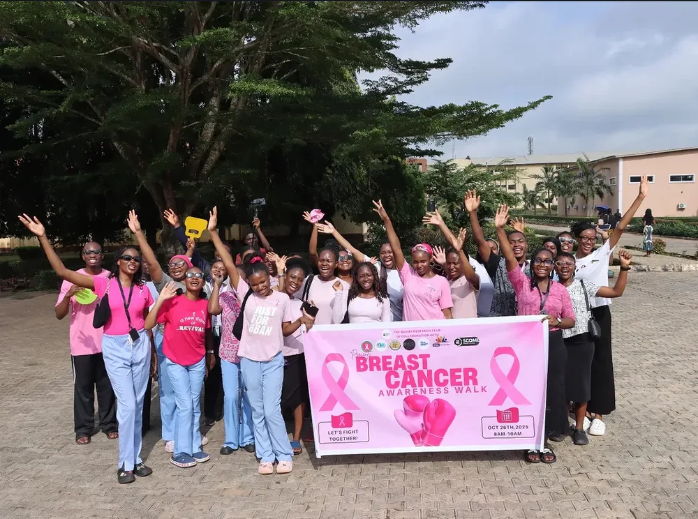
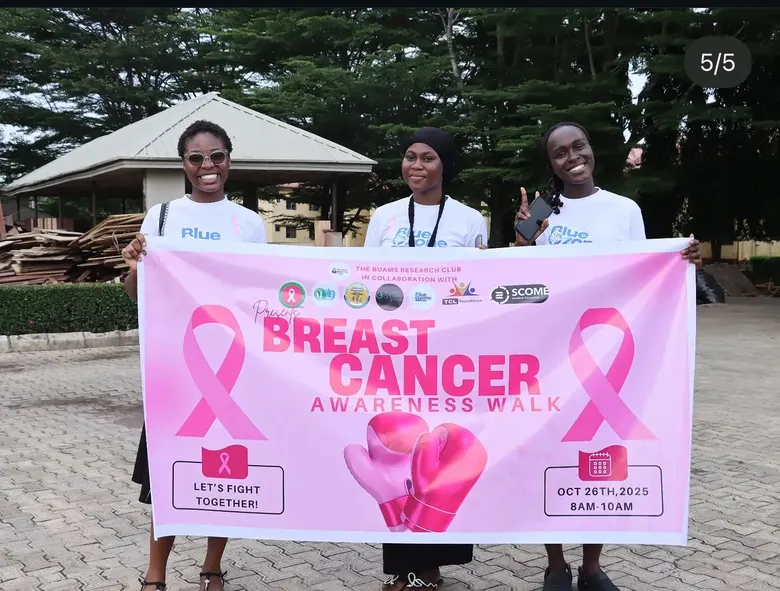
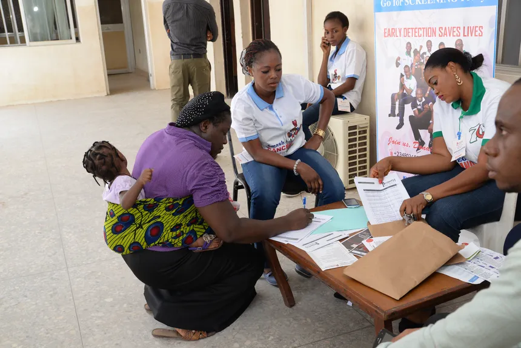
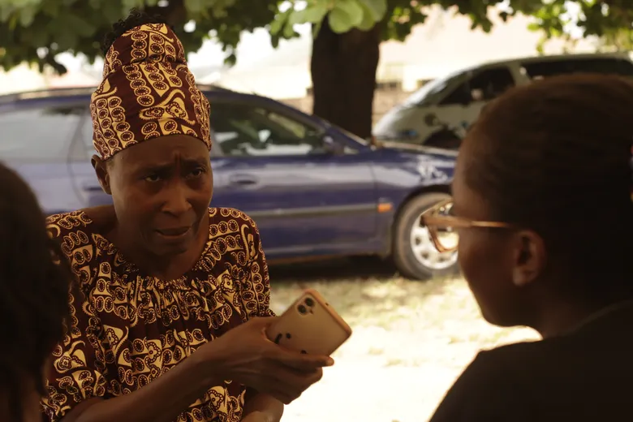
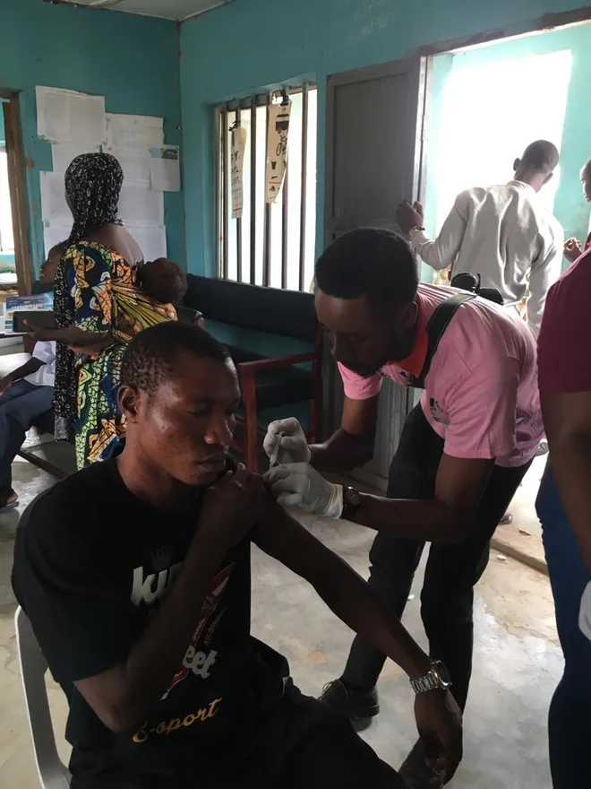

SENSITIZE
Improve cancer literacy, promote accurate information and address misinformation, misconceptions and stigma.
SENSITIZE. SCREEN. PROTECT.
A nationwide movement advancing cancer awareness, prevention, early detection and access to care across Nigeria.
4 Cancers. 36 States. FCT. One Mission.
An initiative of Blue Ozone Health under the END CANCER NIGERIA 2050 AGENDA.
World Cancer Day | 4 February 2027.
The Time to Act Is Now.
On 4 February 2027, communities across Nigeria will come together to advance cancer awareness, prevention and early detection.
SENSITIZE. SCREEN. PROTECT.
Explore the InitiativeFrom Awareness to Action.
STAY SAFE NIGERIA! is a nationwide cancer awareness, prevention, screening, early-detection and patient-navigation initiative led by Blue Ozone Health.
Through community engagement, healthcare partnerships, public education and access to appropriate screening services, the initiative seeks to bring cancer prevention and early detection closer to Nigerians.
We are bringing together healthcare professionals, institutions, volunteers, communities, organisations and partners to strengthen Nigeria’s response to cancer.
Improve cancer literacy, promote accurate information and address misinformation, misconceptions and stigma.
Facilitate access to appropriate cancer screening and clinical assessment through participating healthcare institutions.
Promote cancer prevention through vaccination, risk reduction, healthier behaviours and preventive healthcare.
Strengthen referral pathways, patient navigation and linkages to appropriate healthcare services.
The CONNECT pillar reinforces the importance of ensuring that people who require further assessment are not left without direction.

Nigeria is Africa’s most populous country, yet cancer continues to place a substantial burden on individuals, families, communities and the healthcare system.
Late presentation, limited access to appropriate screening and diagnostic services, inadequate awareness, misinformation and stigma create additional challenges.
Cancer is not just a medical diagnosis.
It affects families, livelihoods, communities and national development.
We are responding with a coordinated effort to improve awareness, prevention, early detection and access to care.
152,261152,261 NEW CASES
90,79590,795 LIVES LOST
292,934292,934 PEOPLE LIVING WITH A RECENT CANCER HISTORY WITHIN THE FIVE-YEAR PREVALENCE PERIOD
Source: International Agency for Research on Cancer (IARC), Global Cancer Observatory, 2024 estimates.
Behind every statistic is a person, a family and a story.
We believe that improved awareness, prevention, timely screening and access to appropriate care can make a meaningful difference.
We are not waiting for the numbers to rise. We are mobilising action.

44,196 estimated new cases in Nigeria in 2024.
LEARN MOREBreast cancer is a major cancer burden in Nigeria.
Early clinical assessment, appropriate screening, awareness of breast changes and timely referral are important components of breast cancer control.
FIND A CENTRE
12,312 estimated new cases in Nigeria in 2024.
LEARN MORECervical cancer is largely preventable through HPV vaccination, appropriate screening and timely management of precancerous lesions.
FIND A CENTRE
24,396 estimated new cases in Nigeria in 2024.
LEARN MOREProstate cancer is a major health concern among Nigerian men.
Awareness, informed screening decisions and timely clinical assessment are important.
FIND A CENTRE
3,783 estimated new cases in Nigeria in 2024.
LEARN MORELiver cancer prevention includes addressing hepatitis B and C infections, promoting vaccination and supporting early identification and management of liver disease.
FIND A CENTRESTAY SAFE NIGERIA! aims to mobilise communities across all 36 states and the Federal Capital Territory.
Our initial programme target is to reach at least 500 people per state.
National Target: 18,500+18,500+ People.
Visitors should be able to discover healthcare facilities participating in STAY SAFE NIGERIA.
Cancer prevention and early detection require collective action.
Whether you are an individual, healthcare professional, organisation or corporate institution, there is a place for you.
For individuals interested in contributing their time, expertise, skills and networks.
For institutions and organisations interested in collaborating with the initiative.
For individuals, organisations and institutions interested in supporting programme implementation.
Your support can help bring cancer education, prevention, screening and early-detection services closer to communities across Nigeria.
SPONSOR STAY SAFE NIGERIANews & Updates
The fight against cancer requires awareness, prevention, early detection, collaboration and sustained action.
We invite individuals, healthcare professionals, institutions, organisations and communities to become part of this mission.
STAY SAFE NIGERIA!
SENSITIZE. SCREEN. PROTECT.